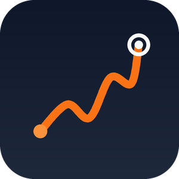

Ton plan marathon, du premier footing à la ligne d'arrivée.
RunCoach prépare un plan d'entraînement adapté à ton niveau et à ton agenda, analyse chacune de tes courses, et envoie le parcours de l'épreuve directement sur ta montre Garmin.

RunCoachRunCoach prépare un plan d'entraînement adapté à ton niveau et à ton agenda, analyse chacune de tes courses, et envoie le parcours de l'épreuve directement sur ta montre Garmin.
Allures, volumes et séances recalibrés chaque semaine selon ce que tu as réellement couru.
Allure, fréquence cardiaque, dénivelé, régularité : ce qui a marché, et ce qu'on ajuste ensuite.
La trace du marathon est publiée dans ton compte Garmin et apparaît dans le menu Parcours de ta montre après synchronisation.
RunCoach se connecte à ton compte Garmin avec le programme Garmin Connect Developer, via OAuth 2.0. Tu autorises explicitement l'accès, et tu peux le révoquer à tout moment depuis Garmin Connect (Paramètres → Applications tierces) ou depuis l'application.
| API Activity | Lecture de tes activités : distance, durée, allure, fréquence cardiaque, cadence, dénivelé et trace GPS. Utilisée pour construire et ajuster le plan, et pour l'analyse d'après-course. |
|---|---|
| API Courses | Publication du parcours de la course dans ton compte Garmin pour qu'il soit disponible sur ta montre. |
RunCoach ne vend aucune donnée, ne les utilise pas à des fins publicitaires et ne s'en sert pas pour entraîner des modèles d'intelligence artificielle. Le détail complet figure dans la politique de confidentialité.
RunCoach est en phase de test sur iOS, avec un accès sur invitation. Écris-nous si tu prépares un marathon et veux essayer.
RunCoach est édité par Denis Vautrin, France.
Contact : vtndenis@gmail.com